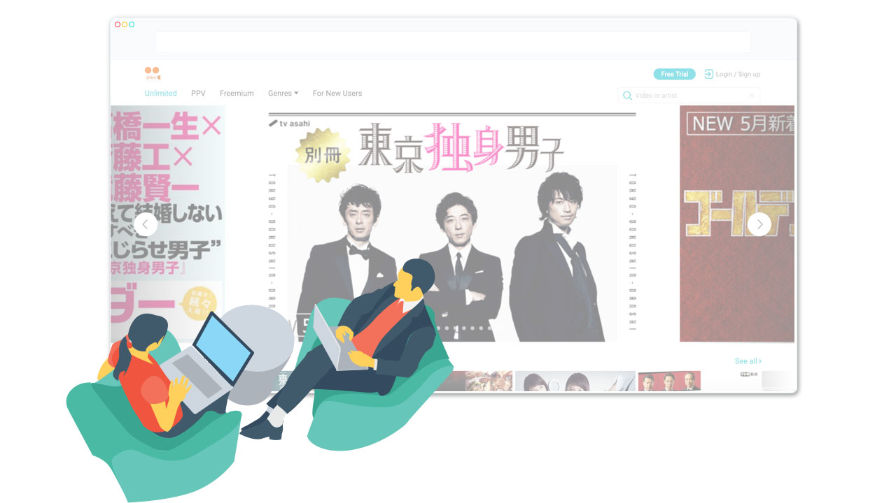
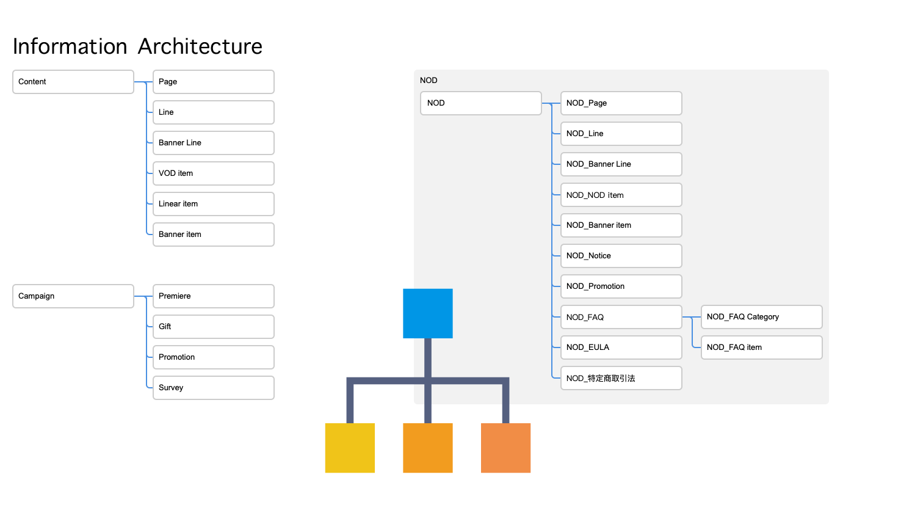
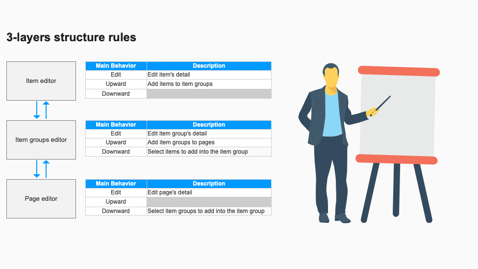
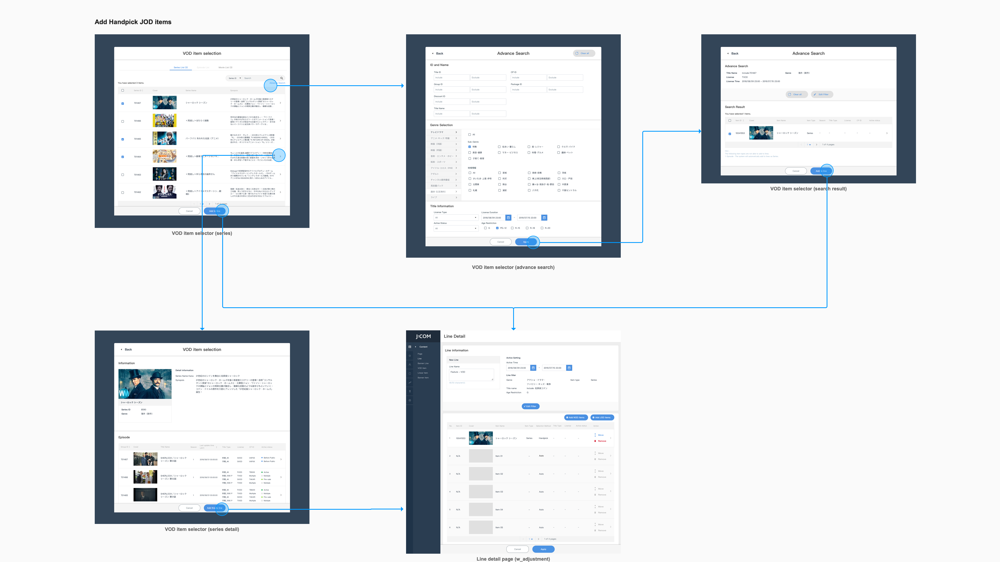
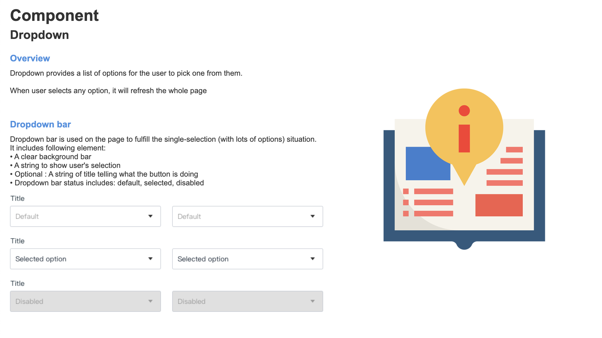
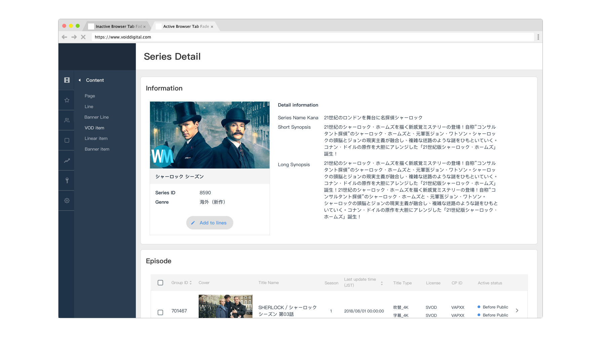

Content Management System
A Japanese cable television network wanted to renew their current service platforms includes set-top box, website and mobile app. After finishing the development of the products, they needed a system to management the contents cross all platform. I took the responsibility of design this content management system (CMS), start from user experience research to wireframing and prototyping.
I took the whole design responsibility of this project. As a researcher, I conducted interviews with stakeholders with the contactual inquiry method. As a designer, I designed the interaction flow and made the wireframe that fulfill business requirement.
— UI/UX Designer, Design Project Lead
- Contextual Inquiry
- Secondary Research
- Stakeholder Map
- User Story
- Information Architecture
- Wireframing
- Design Guideline
Approach

Step 1. Analysis current situation
CMS is such complicated not only because there are several business logics that might influence the interaction, but also there are too many stakeholders who might use this system. All these make the full understanding toward the situation might be quite important. First of all, we tried to figure out the stakeholders’ relation in order to evaluation their influence and expectation toward the system. After that, we conducted interviews to realize the mindset of different user categories of this system: the editor, the content provider and the manager.

Step 2. Understanding data structure and set the Information Architecture
Through the stakeholders evaluation, we have the priority to handle user’s need and know that CMS’s core value is different from the 2C products: Its main mission is to show the real data structure. Metadata of the video content is just like a single building block. We should not only put them in the right place, but also assemble them to provide the right information in the right time. As the designer, I built the information architecture map in that the metadata can be reorganized.

Step 3. Define the rules within the system
As a system that deals with several content provider, if any mistake happens when operating CMS, the company may get into legal trouble. Hence, we have to strike a balance between convenience and rigorous. I set the rules of operation such as: 3-steps action rule and 2-modes selection rule. Once the operator got familiar with these rules, they can take action within the system efficiently. These rules are able to prevent the operator from making mistake.

Step 4. Set Page flow and wireframing
The information architecture is the foundation of the user flow within CMS. The designer is able to define the steps within different user scenario. With the operation rules, we can make the user flow into detail and build the page flow. Besides, the wireframes are also be developed and they improve the cross-team working process. The engineers can develop the real system based on the prototype and the project manager can demo the system to the client to decrease the chance of discussing back and forth.

Step 5. Error handling and guideline
When the project goes into the development stage, the formulate of the guideline turns important. The bunch of error issues and bugs should be handled and solve. The guideline is the criteria to measure the product quality and assist the development team to clarify the solution. Furthermore, we also define the error handling rules so that the editor can report the issue correctly and won’t feel depress.
Result
7
User Scenarios
400+
Wireframes
50+
Components

The CMS goes online on July 2019. The system is the bridge that connects the backend database and the 2C products. It supports the function of editing and managing the content and updating the information immediately toward the client-side user interface.